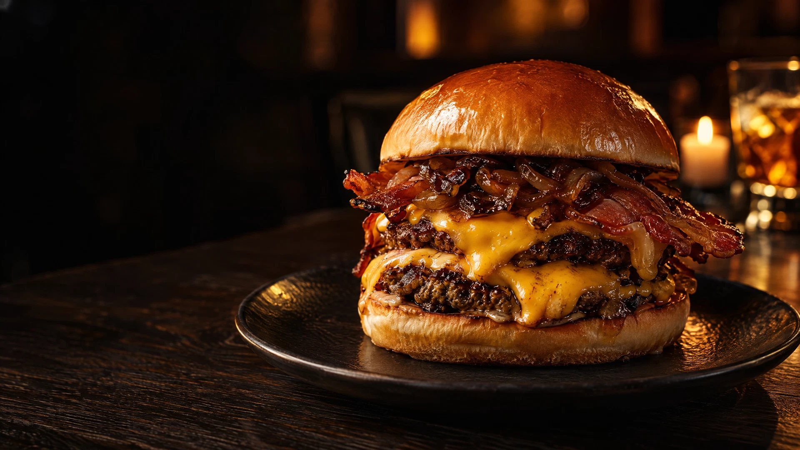
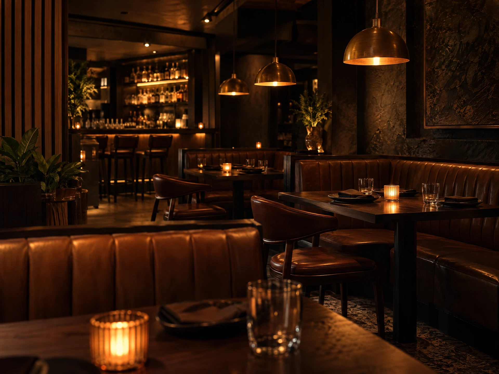

JOTA’S · COZINHA NOTURNA
A CASA DE BRASA — Nº 01A brasa
escreve a noite.
Hambúrgueres artesanais, acompanhamentos para dividir e sobremesas para ficar mais um pouco.
O SABOR EM CAMADAS
Fogo alto.
Tempo de sobra.
Na Jota’s, a primeira mordida é só o começo. O pão tostado, o blend na chapa e o molho da casa encontram seu próprio ritmo.
Uma cozinha de luz baixa, conversa boa e detalhes feitos para a noite durar um pouco mais.

A GENTE SE ENCONTRA AQUI
Sua mesa está por aqui.
Horários da casa
- Terça a quinta
- 18h — 23h
- Sexta e sábado
- 18h — 00h
- Domingo
- 18h — 22h
- Segunda-feira
- Descanso da equipe
Horários sugeridos para esta demonstração.
A última reserva é uma hora antes do fechamento.
Nosso endereço
Endereço completo a informar.
Um cantinho para boas noites. Assim que o endereço oficial estiver disponível, você encontrará aqui a localização e as orientações para chegar.
LOCALIZAÇÃO EM BREVEO melhor
da noite
é à mesa.
GUARDE UM LUGAR PARA A NOITE
Uma mesa.
Muitas histórias.
Escolha o dia, traga a companhia.
Nós cuidamos do resto.
De 1 a 8 pessoas por solicitação.
Reservas sujeitas à confirmação da casa.